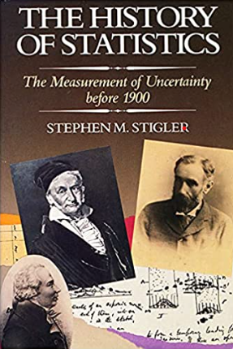
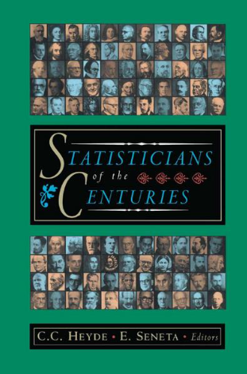
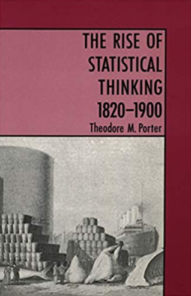
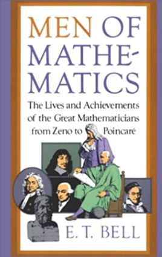
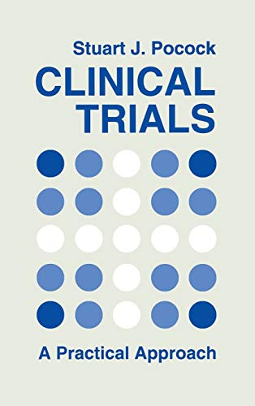
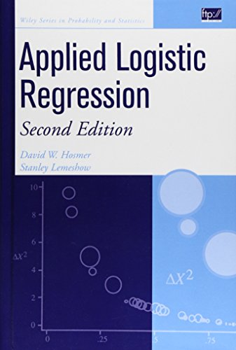
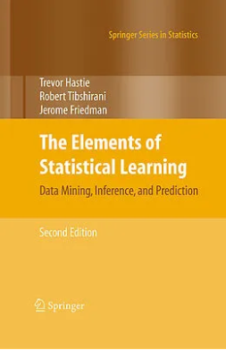

Statistics, Data Mining, Machine Learning
|  |  |  |  |
|  |  |  |
At he end of the ’80 I started working on blood sample from patients. I was analyzing the potassium distribution in patients with different diseases. I had a lot of samples but few insights. I started then to do some math by hand and finally asked for help to the hospital statistician. It was taking ages to analyse my data. When I started doing by myself I understood why. I learned that the most time consuming step , apparently useless, is the data entry and cleaning. But here is where the magic happens. Cleaning the data is not trivial. For example, what to do with missing data ? the missing is not just missing. It provides some information that can’t be dismissed or replaced without some hypothesis around that missing. It also says something around the quality of the data or clinical daily practice (in case of RWD).
So I started by entering the data manually in excel and then transfer them in Systat. Point and click. Easy.
But why click on this button and not on that one ? Why a t-test and not a chi-square or anova ?
I started to dive in. Not in the theory of statistics but in the life of those people that generated the statistical techniques. I wanted to know what kind of questions they were trying to answer with their silly formulas.
I read all the above books and more. Below are few concepts distilled from the books that are the basis of everything we know nowadays, including Machine Learning and Artificial Intelligence.
Galileo Galilei suggested the repetition of the experiment as source of knowledge (not the dogma or belief).
Is not possible to know/measure the truth. With a probabilistic approach we take an “educated guess”
A good portion of statistics is based on the measure of variability.
difference between groups / difference within groups , signal to noise ratio
Below a short list of legends. It is just a sample, completely arbitrary. The contribution of Fermat, Graunt, Pascal, Huygens and the Bernoulli family (from Basel), Euler (from Basel) and many, many more was essential.
| Descartes | 1596-1650 | analytical geometry (y,x axis plot) |
| Jacob Bernoulli | 1655-1705 | Law of large numbers |
| Thomas Bayes | 1701-1761 | Bayes theorem |
| Laplace | 1749-1827 | Central Limit Theorem (uncertainty decreases with the increase of the observations) |
| Legendre | 1752-1833 | method of least squares (later Standard Deviation) |
| William Playfair | 1759-1823 | visualization (graphs) |
| Karl Gauss | 1777-1855 | Normal (bell) curve, distribution |
| George Boole | 1815-1864 | Boolean algebra |
| Francis Galton | 1822-1911 | Regression |
| Charles Peirce | 1839-1914 | inference from sample to population |
| Andrei Markov | 1856-1936 | Markov Chains |
| Karl Pearson | 1857-1936 | Correlation |
| George Yule | 1871-1951 | Odds Ratio |
| George Snedecor | 1881-1974 | Analysis of Variance (ANOVA) |
| Sir Ronald Fisher | 1890-1962 | Design of Experiment, ANOVA, ANCOVA, test of significance (p values) |
| Frank Wilcoxon | 1892-1965 | ranking method, nonparametric test |
| Jerzy Neyman | 1894-1981 | test of hypothesis (null and alternative) Confidence Intervals, sampling |
| Austin Hill | 1897-1991 | randomization in trials |
Today we have many terms such as statistics, analytics, data mining or Artificial Intelligence and Machine Learning and they are seen as different. They are using all the same above building blocks but with a different approach and scope.
Another thing they have in common is the knowledge of the field of application. In the many blogs and training courses and videos available online, data scientists omit to say that from data cleaning to data insights some knowledge of the context is needed. Data scientists can not work in isolation. Oversight from an expert in the field of application is absolutely necessary.
It’s difficult to set boundaries between those disciplines but there are many Venn diagrams available online that are visualizing the overlap.
Technology allowed the harvesting of massive amount of data of different nature, more or less structured. The need to get insights from big data made necessary to expand the statistical framework. Hence the development of the Data Mining framework.
Statistics often deals with test of hypothesis on relatively small datasets normally generated by specific experiment done to answer specific questions.
With more data available (Big Data) the emphasis was more on data visualization (sometime in real time) and reports easy to understand. The interest is more on the trend and the behavior of variables. I like to think of an evolution of what it was called descriptive statistics (in the end it’s just tables and plots). So, Data Mining approach can be seen as a way to explore Big Data.
In statistics many models have been generated and within the statistical approach they are used one by one based on the nature of the data (Linear models, logistic, survival, etc). The aim is to understand the interplay among variables and to quantify the association between predictors (independent variables) and predicted (dependent or outcome). By using those models, implicitly, we make assumptions about the nature of the association (like with the linear models). Another key element in statistics is that the full dataset is used.
In Machine Learning, philosophically, we use the same approach Galileo Galilei suggested more than 500 years ago. We learn by observing the same phenomenon many times. The machine (our laptop) learns by tacking one small sample of our dataset and try to map trends in this small sample. Then the machine re-run (bootstrap) this map (the new tentative model) many times on more little samples until this map describes well the data. The machine guesses many times until it gets lucky and finds the way to link the data to a behaviour. Often the link is completely unclear (black box) and this means that we normally donßt get coefficients like in the linear models as main output. The final model is then deployed (in production). However the model gets better as more data are coming in.
So these are the main features of the Machine Learning (ML) technique:
the scope of the technique is to provide a model able to predict and classify (not to estimate the difference or the risk). Predict if the new patient is at risk of some disease or if the next customer is a good customer or what he could buy along with the first item.
The machine doesn’t use the full dataset at once but in small samples
the ideal use of the model is not to understand a definite dataset but to be deployed on a system where new data are coming in and a prediction is needed in real time
the output of a model is not a set of coefficients (as the number of predictors) but mainly just the accuracy of the model
The ML has been divided in supervised when the data are known and unsupervised when the data are unknown (even without any label on variables). The scope of the latter is just to cluster the variables by using the old Factorial and Principal Component Analysis techniques based and the concept of correlation (Karl Pearson). With the supervised techniques all the variables have a name (label) and therefore are known especially the independent variable which is used to test or as target to teach the machine how to guess the predictors.
Analytics is mainly referring to Data Mining and Machine Learning approaches.